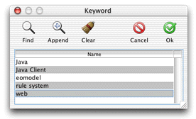

Problem: You need user interface and logic to provide a way for users to select an object or objects from a particular table in the data store.
Solution: Use the controller factory to get a select controller for a particular entity.
If you tackle this task without using the rule system, you could spend a good hour in Interface Builder building the user interface and connecting it to a custom controller class to get the selected objects and pass them on to the requesting object. But by using the rule system and the controller factory, a single method invocation does all of this for you.
In a client-side view class (such as the CustomFormController
class in "Extend a Controller Class" or
a subclass of another core controller class), add the import statement
for com.webobjects.eogeneration.client.
This package contains the controller factory. Then, in the action
method that triggers the selection, add this invocation on the controller factory:
EOControllerFactory.sharedControllerFactory().selectWithEntityName("<entity name>", true, false);
The method takes three arguments: the entity to select from; a Boolean value determining whether multiple selections are allowed; and a Boolean value representing whether the insertion of new records is allowed (if the dialog provides an action to add new records). When invoked, the method presents a select dialog like that shown in Figure 9-1.
Figure 9-1 Select dialog
The method returns an array of EOGlobalID objects representing
the selected objects. To get enterprise objects from EOGlobalID
objects, you can use the method objectForGlobalID defined
in com.webobjects.eocontrol.EOEditingContext.
See the API reference for more information.